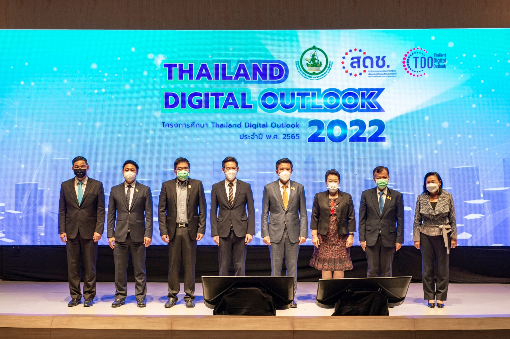
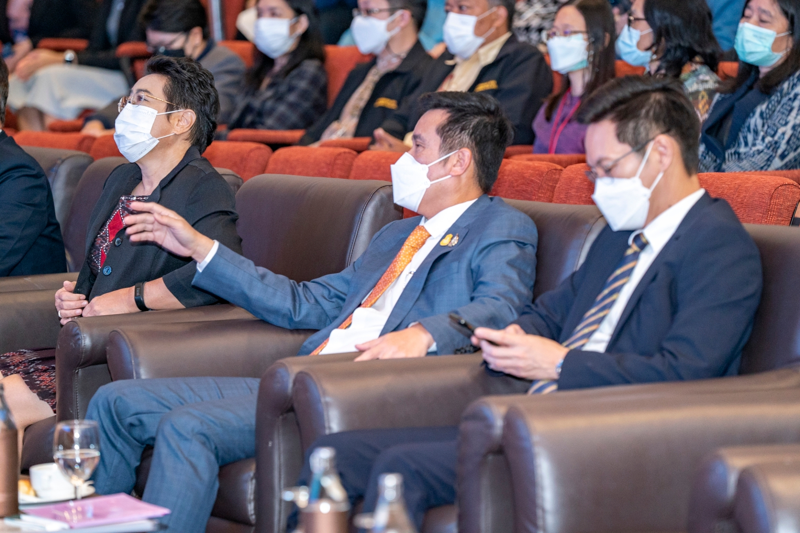
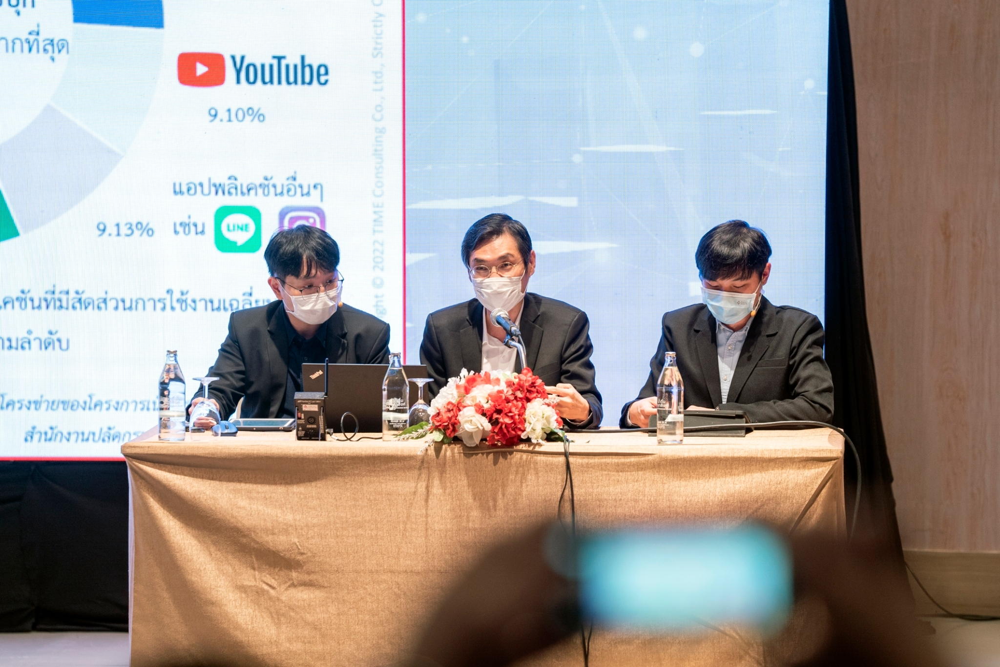
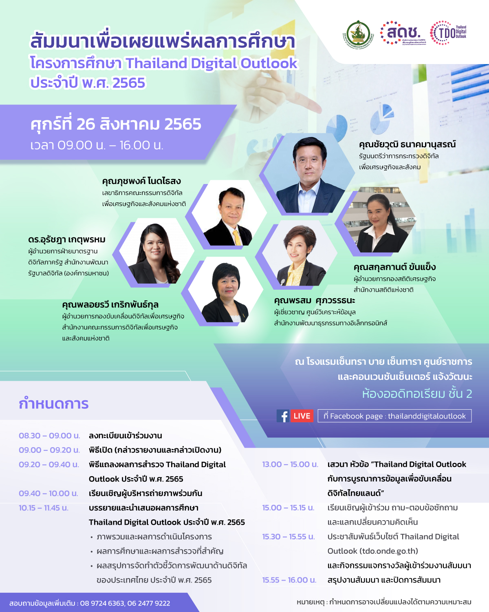
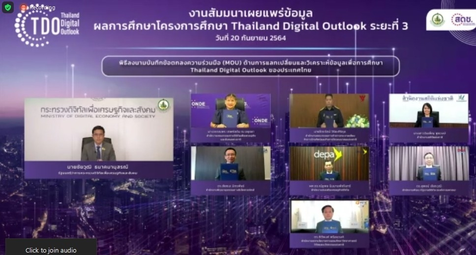
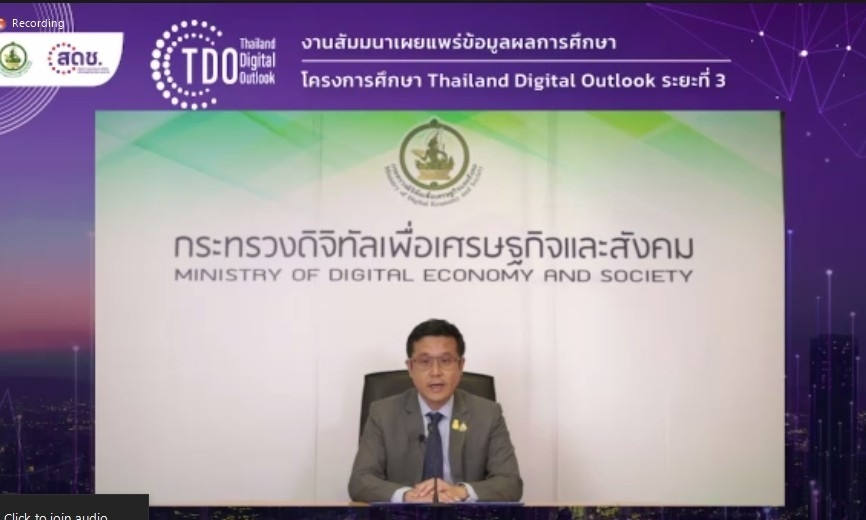
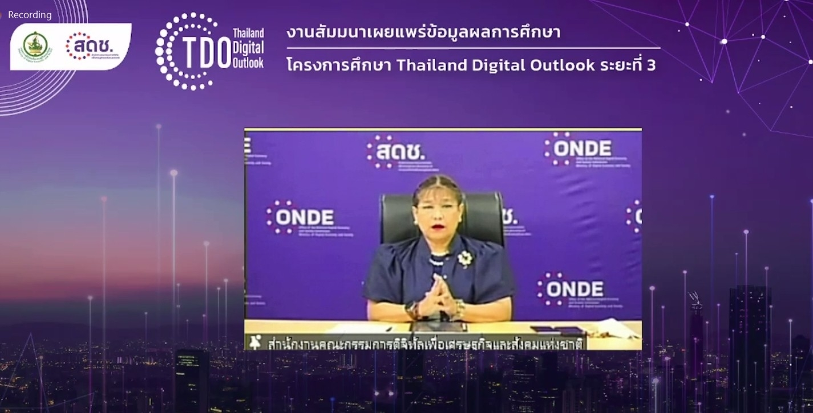
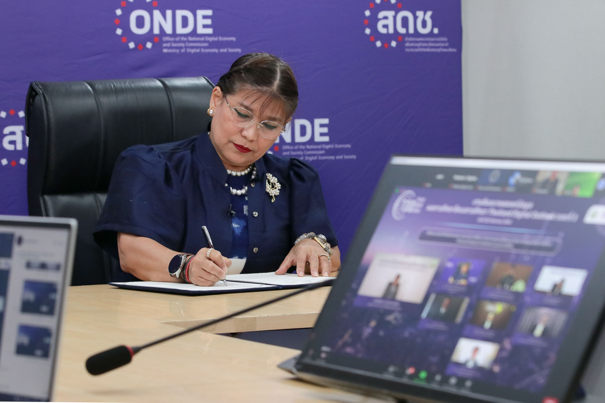
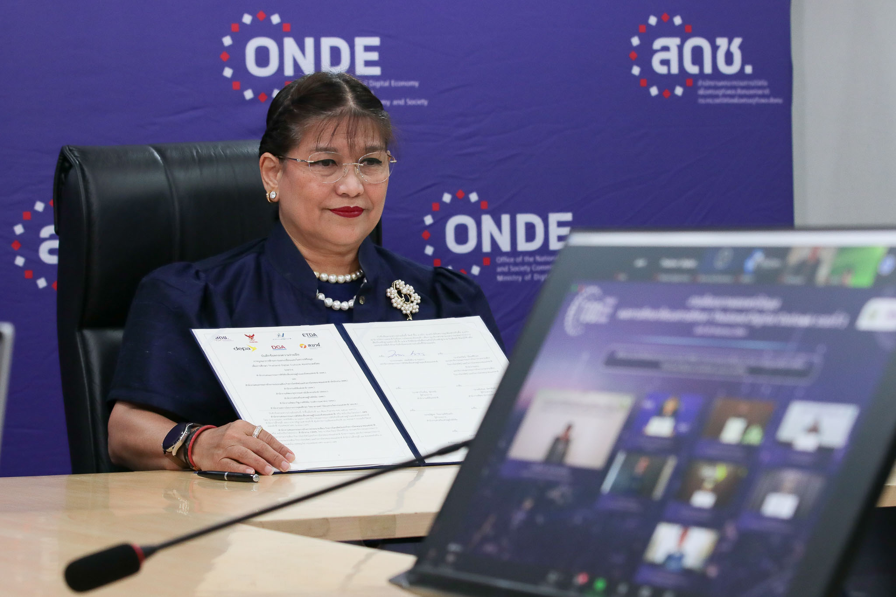
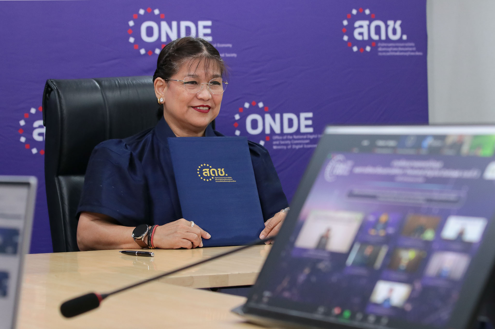

ข่าวสารประชาสัมพันธ์
ผลการจัดงานสัมมนาเพื่อเผยแพร่ผลการศึกษา Thailand Digital Outlook ประจำปี พ.ศ.2565
เมื่อวันที่ 26 สิงหาคม 2565 นายชัยวุฒิ ธนาคมานุสรณ์ รัฐมนตรีว่าการกระทรวงดิจิทัลเพื่อเศรษฐกิจและสังคม เป็นประธานในพิธี กล่าวเปิดงานสัมมนาเพื่อเผยแพร่ผลการศึกษาโครงการศึกษา Thailand Digital Outlook ประจำปี พ.ศ. 2565 พร้อมด้วยการแถลงผลการสำรวจโครงการศึกษา Thailand Digital Outlook ประจำปี พ.ศ. 2565 ณ โรงแรมเซ็นทรา บาย เซ็นทารา ศูนย์ราชการ และคอนเวนชันเซ็นเตอร์ แจ้งวัฒนะ กรุงเทพฯ
โดยภายในงานสัมมนา ช่วงเช้า มีการนำเสนอวิดีทัศน์โครงการ Thailand Digital Outlook ตามด้วยนายภุชพงค์ โนดไธสง เลขาธิการคณะกรรมการดิจิทัลเพื่อเศรษฐกิจและสังคมแห่งชาติ ได้กล่าวรายงาน จากนั้น นายชัยวุฒิ ธนาคมานุสรณ์ รัฐมนตรีว่าการกระทรวงดิจิทัลเพื่อเศรษฐกิจและสังคม ได้กล่าวเปิดงานสัมมนา และแถลงผลการสำรวจโครงการฯ ประจำปี พ.ศ. 2565 และตามด้วยการบรรยายผลการดำเนินงานและผลการศึกษาในโครงการ โดยทีมที่ปรึกษา บริษัท ไทม์ คอนซัลติ้ง จำกัด
และช่วงบ่าย มีการจัดเสวนา ในหัวข้อ “Thailand Digital Outlook กับการบูรณาการข้อมูลเพื่อขับเคลื่อนดิจิทัลไทยแลนด์” โดยมีผู้อำนวยการกองขับเคลื่อนดิจิทัลเพื่อเศรษฐกิจ สำนักงานคณะกรรมการดิจิทัลเพื่อเศรษฐกิจและสังคมแห่งชาติ ร่วมเสวนากับผู้แทนจากสำนักงานพัฒนาธุรกรรมทางอิเล็กทรอนิกส์ สำนักงานสถิติแห่งชาติ และสำนักงานพัฒนารัฐบาลดิจิทัล (องค์การมหาชน)
รับชมวิดีทัศน์แถลงผลการสำรวจโครงการศึกษา Thailand Digital Outlook ประจำปี พ.ศ. 2565 โดย นายชัยวุฒิ ธนาคมานุสรณ์ รัฐมนตรีว่าการกระทรวงดิจิทัลเพื่อเศรษฐกิจและสังคม ได้ที่
รับชมงานสัมมนาย้อนหลังได้ที่ Facebook Live : https://www.facebook.com/thailanddigitaloutlook
สรุปภาพบรรยกาศงานสัมมนาเพื่อเผยแพร่ผลการศึกษา Thailand Digital Outlook ประจำปี พ.ศ. 2565





ขอเชิญร่วมงานสัมมนาเพื่อเผยแพร่ผลการศึกษาโครงการศึกษา Thailand Digital Outlook ประจำปี พ.ศ.2565
สำนักงานคณะกรรมการดิจิทัลเพื่อเศรษฐกิจและสังคมแห่งชาติ (สดช.) กำหนดจัดสัมมนาเพื่อเผยแพร่ผลการศึกษาโครงการศึกษา Thailand Digital Outlook ประจำปี พ.ศ. 2565 ในวันศุกร์ที่ 26 สิงหาคม พ.ศ. 2565 เวลา 09.00 น. – 16.00 น. ณ โรงแรมเซ็นทรา บาย เซ็นทารา ศูนย์ราชการ และคอนเวนชันเซ็นเตอร์ แจ้งวัฒนะ
รับชมงานสัมมนาได้ผ่านทาง Facebook Live ได้ที่ : https://www.facebook.com/thailanddigitaloutlook
ผลการจัดงานสัมมนาเพื่อเผยแพร่ผลการศึกษา Thailand Digital Outlook ประจำปี พ.ศ.2564
เมื่อวันที่ 20 กันยายน 2564 นายชัยวุฒิ ธนาคมานุสรณ์ รัฐมนตรีว่าการกระทรวงดิจิทัลเพื่อเศรษฐกิจและสังคม เป็นประธานกล่าวเปิดงานสัมมนาเผยแพร่ข้อมูลผลการศึกษาสำรวจและจัดทำดัชนีตัวชี้วัดด้านเศรษฐกิจดิจิทัลของประเทศ ภายใต้การดำเนินงานโครงการศึกษา Thailand Digital Outlook ระยะที่ 3 โดยมี นางวรรณพร เทพหัสดิน ณ อยุธยา เลขาธิการคณะกรรมการดิจิทัลเพื่อเศรษฐกิจและสังคมแห่งชาติ เผยแพร่ข้อมูลผลการศึกษาสำรวจและจัดทำดัชนีตัวชี้วัดด้านเศรษฐกิจดิจิทัลของประเทศ ภายใต้การดำเนินงานโครงการศึกษา Thailand Digital Outlook ระยะที่ 3
สำนักงานคณะกรรมการดิจิทัลเพื่อเศรษฐกิจและสังคมแห่งชาติ (สดช.) ได้ดำเนินการโครงการศึกษาวิจัย Thailand Digital Outlook ระยะที่ ๓ ขึ้น โดยร่วมมือกับทีมที่ปรึกษาในการศึกษาแนวทางการจัดเก็บตัวชี้วัดทางเศรษฐกิจที่สำคัญของประเทศ โดยยึดหลักเกณฑ์และกรอบการดำเนินงานในระดับสากลที่องค์การเพื่อความร่วมมือทางเศรษฐกิจและการพัฒนา (The Organisation for Economic Co-operation and Development หรือ OECD) ได้กำหนดไว้ ซึ่งประโยชน์ที่จะได้รับจากการศึกษาวิจัยครั้งนี้ที่สำคัญ คือ จะได้ตัวเลขทางสถิติที่บอกถึงตัวชี้วัดทางด้านดิจิทัล และเศรษฐกิจดิจิทัล ตามหลักสากล และการศึกษาวิจัยบริบทของการพัฒนาด้านดิจิทัลของไทย เพื่อให้ได้แนวทางการปฏิบัติที่เป็นเลิศในระดับสากล (Best Practice) ในการประเมินผลนโยบายการพัฒนาด้านดิจิทัล และแนวทางการปฏิรูปนโยบายการพัฒนาดิจิทัลของไทยให้มีมาตรฐานในระดับนานาชาติ และสามารถบูรณาการเข้ากับหน่วยงานที่เกี่ยวข้องในอนาคตหน่วยงานภาครัฐ และภาคเอกชนสามารถนำผลการศึกษามาประเมินและใช้ประกอบการพิจารณาการกำหนดนโยบายด้านเศรษฐกิจดิจิทัลในการพัฒนาประเทศอย่างมีประสิทธิภาพ ซึ่งจะช่วยในการกำหนดแนวทางการส่งเสริมให้ประชาชนมีความสามารถในการเข้าถึงอินเทอร์เน็ตและช่วยเพิ่มความสามารถในการแข่งขันของประเทศไทยให้ได้ดียิ่งขึ้น นางวรรณพรกล่าว
โอกาสนี้ สดช. ยังได้มีการลงนามความร่วมมือในโครงการ Thailand Digital Outlook ซึ่งเป็นผลสำรวจดัชนีชี้วัดการพัฒนาด้านเศรษฐกิจดิจิทัลของประเทศ ร่วมกับหน่วยงานด้านดิจิทัลของภาครัฐอีก 6 หน่วยงานด้วยกัน ประกอบด้วย สำนักงานสถิติแห่งชาติ (สสช.) สำนักงานพัฒนาธุรกรรมทางอิเล็กทรอนิกส์ (สพธอ.) สำนักงานส่งเสริมเศรษฐกิจดิจิทัล (สศด.) สำนักงานคณะกรรมการกิจการกระจายเสียง กิจการโทรทัศน์ และกิจการโทรคมนาคมแห่งชาติ (กสทช.) สำนักงานสภานโยบายการอุดมศึกษา วิทยาศาสตร์ วิจัยและนวัตกรรมแห่งชาติ (สอวช.) และสำนักงานพัฒนารัฐบาลดิจิทัล (สพร.) ทั้งนี้ เพื่อให้หน่วยงานดังกล่าวได้มีการบริหารจัดการและการบูรณาการข้อมูลภาครัฐที่มีความสอดคล้องและเชื่อมโยงเข้าด้วยกัน รวมถึงเป็นการยกระดับการบริหารงานภาครัฐให้เป็นระบบดิจิทัล ที่มีระบบการทำงานและข้อมูลเชื่อมโยงกันระหว่างหน่วยงานของรัฐ โดยนำผลการศึกษา Thailand Digital Outlook ของประเทศไทย รวมถึงข้อมูลและชุดข้อมูลในการศึกษานี้ไปใช้ในการวางยุทธศาสตร์องค์กรของแต่ละหน่วยงานอีกด้วย







ผลการจัดงานสัมมนาเพื่อเผยแพร่ผลการศึกษา Thailand Digital Outlook ประจำปี พ.ศ.2563
นางวรรณพร เทพหัสดิน ณ อยุธยา เลขาธิการคณะกรรมการดิจิทัลเพื่อเศรษฐกิจและสังคมแห่งชาติ เป็นประธานเปิดงานสัมมนาการสำรวจและจัดทำดัชนีตัวชี้วัดด้านดิจิทัลของประเทศ ปี 2563 (Thailand Digital Outlook 2020) โครงการศึกษาวิจัย Thailand Digital Outlook ระยะที่ 2 ซึ่ง สดช. ได้ร่วมมือกับทีมที่ปรึกษาในการศึกษาแนวทางการจัดเก็บตัวชี้วัดทางเศรษฐกิจที่สำคัญของประเทศ โดยยึดหลักเกณฑ์และกรอบการดำเนินงานในระดับสากลที่องค์การเพื่อความร่วมมือทางเศรษฐกิจและการพัฒนา หรือ OECD ได้กำหนดไว้ และมีเป้าหมายสำคัญเพื่อสำรวจและศึกษาสถานภาพปัจจุบันด้านการใช้งานเทคโนโลยีดิจิทัลของประเทศไทย หรือ Thailand Digital Outlook อันจะนำไปสู่การจัดเตรียมการและข้อเสนอแนะเพื่อปฏิรูประบบดิจิทัลและการดำเนินนโยบายและมาตรการการพัฒนาด้านดิจิทัลเพื่อการพัฒนาเศรษฐกิจและสังคมของประเทศต่อไป โดยมีผู้บริหารจากทั้งรัฐและเอกชนจำนวน 22 หน่วยงาน เข้าร่วม ณ ห้องออดิทอเรียม ชั้น 2 โรงแรมเซ็นทรา บาย เซ็นทารา ศูนย์ราชการและคอนเวนชันเซ็นเตอร์ แจ้งวัฒนะ ถนนแจ้งวัฒนะ เขตหลักสี่ กรุงเทพฯ
นางวรรณพร กล่าวว่า กระทรวงดิจิทัลเพื่อเศรษฐกิจและสังคม เล็งเห็นความสำคัญของการขับเคลื่อนการพัฒนาดิจิทัลให้เกิดประโยชน์ต่อเศรษฐกิจและสังคมของประเทศ โดยจากการริเริ่มของกระทรวงฯ ในการเข้าร่วมเป็นสมาชิกในคณะนโยบายขององค์การเพื่อความร่วมมือและการพัฒนาทางเศรษฐกิจ (OECD) เมื่อปี พ.ศ. ๒๕๖๑ ตามแนวทางการปฏิบัติที่เป็นเลิศในระดับสากลตามกรอบที่ OECD กำหนด เช่น กรอบ OECD Measuring the Digital Transformation และกรอบ OECD Going Digital Toolkit ซึ่งประกอบด้วยการประเมินสภาพเศรษฐกิจดิจิทัล ผ่านตัวชี้วัดใน 8 มิติ ได้แก่ 1) การเข้าถึง (Access) 2) การใช้งาน (Use) 3) นวัตกรรม (Innovation) 4) อาชีพ (Jobs) 5) สังคม (Society) 6) ความน่าเชื่อถือ (Trust) 7) การเปิดเสรีของตลาด (Market Openness) และ 8) การเติบโตและสภาพความเป็นอยู่ (Growth & Well-being) และมีตัวชี้วัดมากกว่า 130 ตัวชี้วัด ได้นำไปสู่การดำเนินโครงการศึกษาวิจัย Thailand Digital Outlook ที่มีวัตถุประสงค์เพื่อประเมินสถานภาพการพัฒนาด้านดิจิทัลของประเทศ ซึ่งดำเนินการโดยสำนักงานคณะกรรมการดิจิทัลเพื่อเศรษฐกิจและสังคมแห่งชาติ (สดช.) และสอดคล้องกับภารกิจหนึ่งของกระทรวงดิจิทัลเพื่อเศรษฐกิจและสังคม ที่จะต้องรับทราบ ทำความเข้าใจ การเปลี่ยนผ่านในยุคดิจิทัลที่เกิดขึ้นภายในประเทศ วิเคราะห์ประเด็นทางเศรษฐกิจและสังคมดิจิทัล รวมถึงแนวโน้มการพัฒนาดิจิทัลเพื่อเศรษฐกิจและสังคม อันจะช่วยให้กระทรวงฯ และ สดช. สามารถเตรียมการ จัดทำนโยบายและแผนงาน รวมถึงออกมาตรการต่าง ๆ เพื่อมุ่งส่งเสริมและพัฒนาดิจิทัลของประเทศโดยรวมต่อไปได้
นางวรรณพร กล่าวเพิ่มเติมว่า ในปี 2563 นี้ สดช. ได้มีการดำเนินโครงการศึกษาวิจัย Thailand Digital Outlook ระยะที่ 2 ขึ้น โดยดำเนินการศึกษาวิจัย สำรวจ และวิเคราะห์ประเด็นทางเศรษฐกิจดิจิทัล รวมถึงแนวโน้มการพัฒนาดิจิทัลเพื่อเศรษฐกิจและสังคม โดยอาศัยกรอบตัวชี้วัดทางเศรษฐกิจที่สำคัญตามแนวทางปฏิบัติที่เป็นเลิศในระดับสากลตามกรอบของ OECD ผลการศึกษาวิจัยจากโครงการนี้ ถือเป็นที่น่าพอใจยิ่ง สามารถแสดงภาพการพัฒนาด้านดิจิทัลของประเทศ อันเป็นผลจากการดำเนินนโยบายดิจิทัลของกระทรวงฯ สดช. และหน่วยงานภาครัฐที่เกี่ยวข้อง รวมทั้งสะท้อนให้เห็นจุดแข็งและจุดอ่อนของประเทศไทยในปัจจุบัน ที่ต้องได้รับการพัฒนาต่อยอด หรือปรับปรุงแก้ไขต่อไปในอนาคต นอกจากนี้ หน่วยงานภาครัฐและเอกชนยังสามารถนำข้อมูลผลการสำรวจ และผลการศึกษาวิจัยต่าง ๆ จากโครงการศึกษาวิจัย Thailand Digital Outlook ระยะที่ ๒ นี้ ไปใช้ประโยชน์ต่อยอดได้โดยแท้จริง ทั้งการปฏิบัติงานตามภารกิจของหน่วยงาน การให้บริการภาคประชาชนและภาคธุรกิจ การออกนโยบายและมาตรการส่งเสริมภาคประชาชนและภาคธุรกิจต่าง ๆ สำหรับหน่วยงานภาครัฐ และการวางแผนดำเนินกิจการในธุรกิจของท่าน สำหรับภาคเอกชนให้มีประสิทธิภาพมากยิ่งขึ้น และสอดรับกับสภาพตลาดในยุคดิจิทัลไทยแลนด์